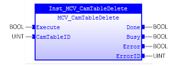

Deletes a specified cam table.

MCV_CamTableDelete deletes a cam table specified by ‘CamTableID’ input.
Make sure the input and output parameters are of data type indicated in the table below.
There are only 32 cam tables can be used in Trio PLCopen development environment.
The cam table identification cannot be used if it has been deleted by MCV_CamTableDelete .
|
Name |
Data Type |
Description |
|
INPUTS |
||
|
Execute |
BOOL |
Execute at rising edge |
|
CamTableID |
UINT |
Cam table identification which intend to be deleted. |
|
OUTPUTS |
||
|
Busy |
BOOL |
The FB new output values are to be expected |
|
Done |
BOOL |
The FB execution is enabled. |
|
Error |
BOOL |
Signals that an error has occurred within the FB |
|
ErrorID |
UINT |
Error identification |